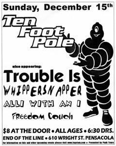

 SUN DEC 15from the archive Ten Foot Pole, Trouble Is, Whippersnapper, Alli With An I, Freedom Couch ten foot poletrouble iswhippersnapperalli with an ifreedom couch End Of The Line, 610 Wright St, Pensacola FL open in mapsshare this flyerthe archive ↗